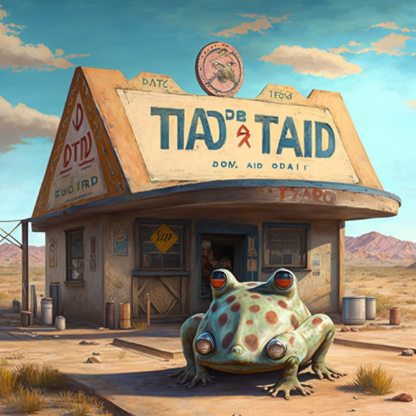
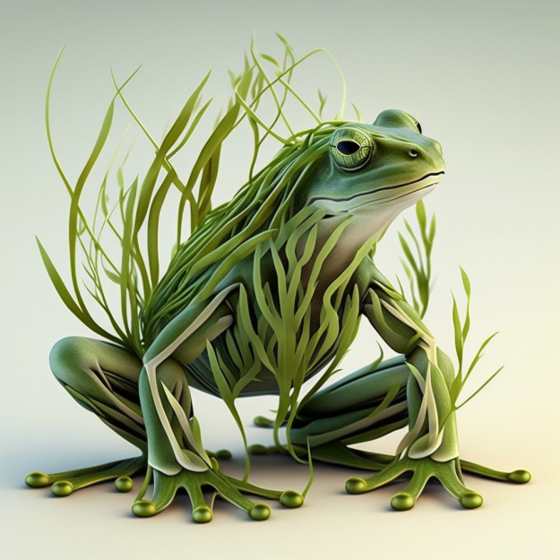
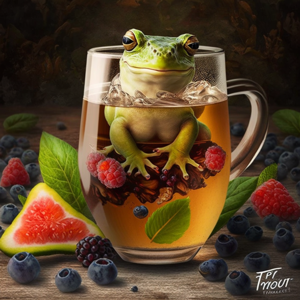
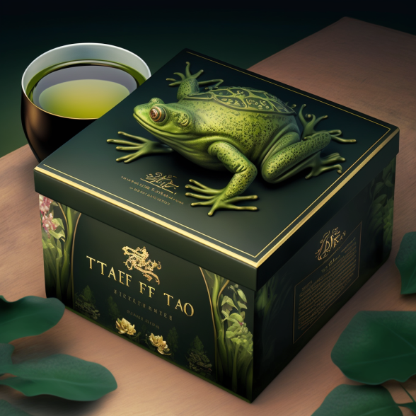
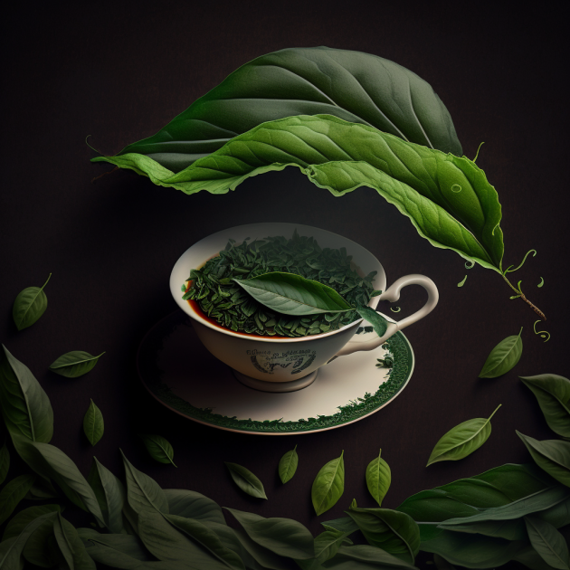
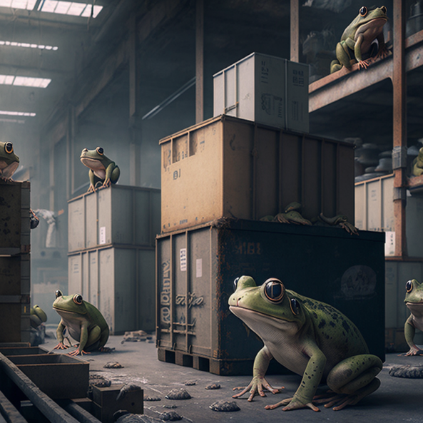
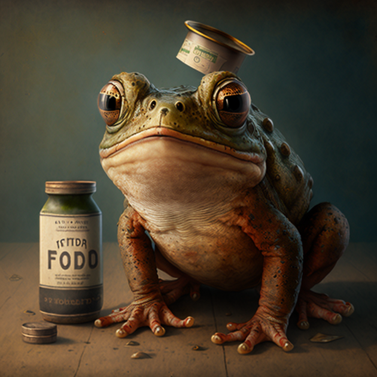

Новости
-
Наш сайт
Мы разработали сайт для продажи нашей продукции. Благодаря этому мы сделали наш товар более доступней и в круглосуточной доступности.
09.03.2023 -
Первый зелёный
Наше производство стало первым заводом в регионе, который начал использовать 100% экологически чистые методы производства! Мы заботимся о нашей планете и уважаем природу, поэтому мы перешли на использование только органических удобрений и средств защиты растений. Мы уверены, что такой подход не только полезен для окружающей среды, но и позволит создавать более качественный и вкусный чай.
21.01.2023 -
Фруктовый чай
Новый вкус нашего чая теперь доступен во всех магазинах! Мы рады сообщить, что мы расширили наш ассортимент чая и теперь предлагаем новый сорт - фруктовый чай. Он содержит смесь вкусных фруктов и ягод, которые обеспечивают
30.11.2022 -
Чёрная пятница
В переиод 11 ноября мы предостовляем обширные акцию на нашу продукцию.
11.11.2022 -
Подарки
Наша команда начал продажу чая в подарочных наборах! Теперь вы можете купить наш чай в красивой подарочной упаковке, которая станет прекрасным подарком для друзей и близких.
10.10.2022 -
Новая технология
Мы ввели новую технология сбора листьев чая, благодаря которой удалось значительно повысить качество продукции.
03.05.2022 -
Новый склад
Мы открыли новый склад для хранения продукции, что позволило улучшить условия хранения и обеспечить быструю доставку клиентам.
03.05.2022 -
Социальная помощь
Мы запустили социальную программу по поддержке местного сообщества, в рамках которой оказывается помощь нуждающимся.
20.02.2022